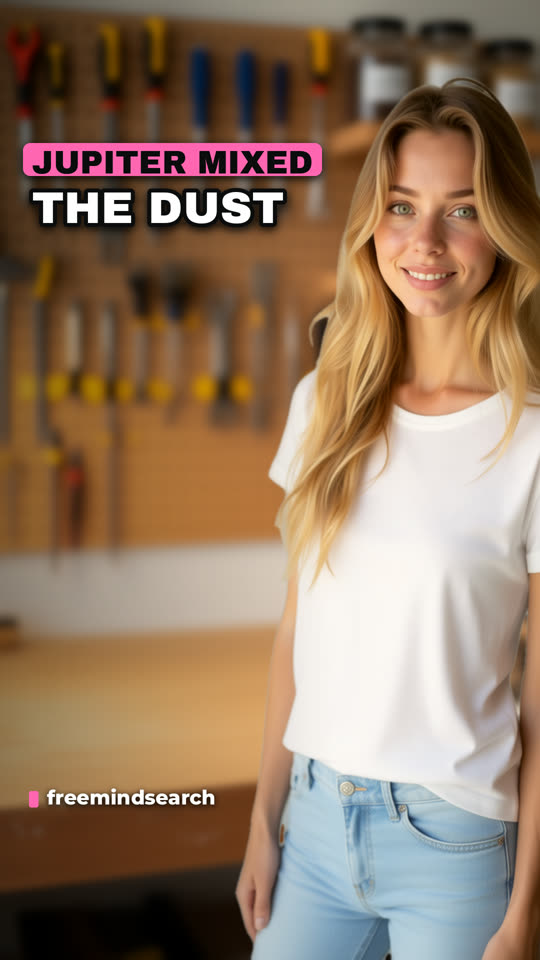

Story
Jupiter may have shaped the dust of our solar system
Half a gram of asteroid Bennu is rewriting how scientists think the solar system's building blocks mixed. The study proposes that Jupiter filtered the dust Bennu formed from.
Watch on FacebookWatch on InstagramWatch on TikTokWatch on YouTube
So: do you think Jupiter protected us, or shaped us?
Sources
- ScienceDaily (ETH Zurich release): https://www.sciencedaily.com/releases/2026/10/261023023734.htm
- Science Advances, 2026: https://doi.org/10.1126/sciadv.aei9107
Made with AI: the presenter, voice and visuals are AI-generated. Every story is researched and fact-checked by a person, with its sources listed.